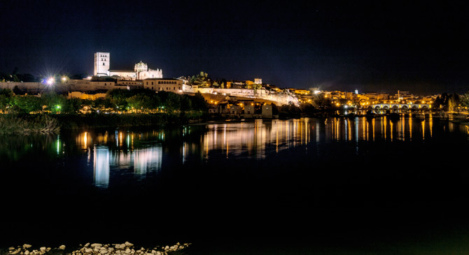

| Provincias | |
|---|---|
| León | |
| Ávila | |
| Salamanca | |
| Soria | |
| Segovia | |
| Palencia | |
| Burgos | |
| Valladolid |
Zamora es una provincia española situada en el noroeste de la comunidad autónoma de Castilla y León, cuya capital y ciudad más poblada es Zamora
Tiene una extensión de 10 561 km², lo que representa el 2,1 % de la superficie de España, y está situada entre los paralelos 41º 8´ y 42º 15´ de latitud norte y los meridianos 5º 15´y 7º 02´ de longitud oeste, tomando como base el meridiano de Greenwich. El 1 de enero de 2019 contaba con una población total de 172 539 habitantes.7 Limita al norte con la provincia de León, por el este con la provincia de Valladolid, por el sur con la de Salamanca, y por el oeste con Portugal y con Galicia a la altura de la provincia de Orense.
La provincia tiene 5209 núcleos de población, agrupados en 248 municipios, de los cuales más de la mitad cuentan con menos de 250 habitantes, dieciséis de ellos tienen más de 1000 habitantes y solo Benavente, Toro y Zamora capital superan los 5000 habitantes.
Como tal, quedó constituida en la división territorial de España en 1833, tras las reformas llevadas a cabo por Javier de Burgos, formando parte, aunque sin operatividad administrativa, de la región de León.Está dividida en 248 municipios, agrupados en cinco partidos judiciales: Toro, Zamora, Benavente, Sanabria y Villalpando
La provincia de Zamora cuenta con una superficie de 10 561 km² y limita al norte y sur con las provincias de León y Salamanca respectivamente, al este con la de Valladolid y al oeste con la provincia gallega de Orense y con el distrito portugués de Braganza.
Comprendida en la submeseta norte, su territorio presenta numerosos contrastes. Destaca una zona montañosa al noroeste, ocupada por parte de los montes de León, con alturas que llegan a los 2127 m (Peña Trevinca). En la zona occidental de la provincia, la sierra de la Culebra registra alturas de hasta 1241 m (Peña Mira) y acoge en su seno la reserva regional de caza de su mismo nombre, con importantes poblaciones de lobo ibérico (las más significativas de la península), ciervos y jabalíes, entre otros. Al suroeste de la provincia el río Duero discurre encajonado en una garganta denominada los Arribes del Duero con desniveles de hasta 300 m, constituyendo una frontera natural con Portugal. La zona centro, este y sur presenta la típica llanura meseteña, con excepción de los parajes-miradores de Peñausende, denominados Teso Santo16 y "El Castillo", ambos cercanos a los 1000 m de altura sobre el nivel del mar.
Su altura mínima se registra al suroeste del municipio de Fermoselle sobre los 330 m y su altura máxima en Peña Trevinca 2127 m en el municipio sanabrés de Porto.
Foto extraída de terranostrum.es
Las principales localidades son Zamora,Toro,Benavente,Sanabria y Villalpando
La provincia de Zamora cuenta con una superficie de 10 561 km² y limita al norte y sur con las provincias de León y Salamanca respectivamente, al este con la de Valladolid y al oeste con la provincia gallega de Orense y con el distrito portugués de Braganza.
Comprendida en la submeseta norte, su territorio presenta numerosos contrastes. Destaca una zona montañosa al noroeste, ocupada por parte de los montes de León, con alturas que llegan a los 2127 m (Peña Trevinca). En la zona occidental de la provincia, la sierra de la Culebra registra alturas de hasta 1241 m (Peña Mira) y acoge en su seno la reserva regional de caza de su mismo nombre, con importantes poblaciones de lobo ibérico (las más significativas de la península), ciervos y jabalíes, entre otros. Al suroeste de la provincia el río Duero discurre encajonado en una garganta denominada los Arribes del Duero con desniveles de hasta 300 m, constituyendo una frontera natural con Portugal. La zona centro, este y sur presenta la típica llanura meseteña, con excepción de los parajes-miradores de Peñausende, denominados Teso Santo16 y "El Castillo", ambos cercanos a los 1000 m de altura sobre el nivel del mar.
Desde el punto de vista fisiográfico, la provincia se caracteriza por unas extensas llanuras o campiñas que son cruzadas por amplias y fértiles vegas. Esta morfología mesetaria se ve rota en su borde norte por la sierra de la Cabrera, que marca el límite con la provincia de León y la Segundera que limita con Galicia. La Cabrera, estructurada en tres macizos: las sierras de los Corzos, de la Cabrera Baja y de Peñas Negras, se prolonga hacia el este a través de las sierras de San Ciprián, de Escudero, de Carpurias y de Peña Hermosa hasta desaparecer bajo los sedimentos de la cuenca del Duero. En el borde sur de la comarca de Sanabria, las sierras de Marabón, Tejera, Gamoneda y Atalaya configuran los principales resaltes marcando el límite con Portugal.
El centro, sureste y noreste de la provincia cuenta con un clima mediterráneo continentalizado, es un clima seco y con temperaturas bajas en invierno, muy calurosas en verano y suaves en las estaciones intermedias. Al noroeste de la provincia, en la comarca de Sanabria, el clima es notablemente más templado y húmedo, al contar con una notable influencia atlántica, aunque en las zonas más elevadas se dan las características del clima de montaña
Por lo general las temperaturas medias anuales de la provincia de Zamora son relativamente bajas, oscilando entre los 8 °C de Sanabria y los 12,5 °C del entorno de Zamora, la capital provincial. Las precipitaciones son en general escasas en toda la provincia con valores normalmente inferiores a 400 mm/año, solo Sanabria se escapa a esta tendencia seca, llegando a valores de hasta 1400 mm/año, buena parte de ellos en forma de nieve. Así cuanto más al norte y oeste nos encontremos las temperaturas serán más bajas y la pluviosidad mayor.
La práctica totalidad de la provincia de Zamora se encuentra ubicada dentro de la Cuenca Hidrográfica del Duero a excepción del río Bibey, en la comarca de Sanabria, que vierte hacia el oeste perteneciendo por ello a la del Miño. El Duero es la principal corriente fluvial de la provincia, penetrando en ella por la zona de Toro y saliendo por Fermoselle encajonado entre grandes murallas naturales de cerca de 300 m de altura, los Arribes del Duero. El caudal del Duero es muy variable oscilando entre poco más de 10 m³/s en las épocas de estiaje, a más de 500 en las grandes crecidas, si bien el caudal medio es de unos 80 m³/s a su paso por Zamora capital. Al Duero le sigue en importancia el río Esla, que cruza la provincia de norte a sur, y algunos de sus afluentes como el Aliste, el Tera, el Cea y el Órbigo, aunque no menos importantes son el Valderaduey y, haciendo de límite con la provincia de Salamanca, el río Tormes, ambos afluentes principales del río Duero.
La estructura lacustre de la provincia es muy importante, tanto por los lagos naturales, como el lago de Sanabria o las lagunas de Villafáfila, como por los numerosos embalses creados para el aprovechamiento hidroeléctrico y la regulación hidrológica. El lago de Sanabria con sus 368 hectáreas es el mayor lago de origen glaciar de la península ibérica, mientras que el sistema de lagunas-salinas de Villafáfila, con sus tres lagunas principales (Grande, Barillos y de las Salinas) y las numerosas charcas menores, constituye una de las más importantes zonas de invernada de aves migratorias de Europa y la de mayor colonia de avutardas de Europa.
En la provincia de Zamora, se encuentran los parques naturales del Lago de Sanabria y alrededores y de Arribes del Duero y la reserva natural de las Lagunas de Villafáfila, así como la reserva de la biosfera de la Meseta Ibérica, compartida con Salamanca y Portugal. Además existen zonas protegidas o con régimen especial de caza en las sierras de la Culebra y de la Cabrera.

Foto extraída de wikipedia.org
La historia de la provincia de Zamora es una parte de la historia de España que se localiza en el área geográfica aproximada de la actual provincia de Zamora. Hubo historiadores y estudiosos relevantes de la historia de la provincia, algunos de ellos fueron el fraile medieval Juan Gil de Zamora, y uno de los más renombrados que del siglo XVI: Florián de Ocampo (que en la actualidad posee un Instituto de Estudios Zamoranos homónimo), y los historiadores de la provincia: Cesáreo Fernández Duro, Antonio Piñuela Ximénez y Ursicinio Álvarez.Todos ellos fueron estudiosos especializados que pusieron la semilla de los historiadores que posteriormente aparecieron en el siglo XX. En 1989 se celebra el Primer Congreso de Historia de Zamora con ediciones posteriores. La provincia ha tenido desde sus inicios tres ciudades históricamente importantes: Zamora, Toro, Benavente. En torno a ellas existen otros núcleos poblacionales con protagonismo y presencia en diferentes instantes de su historia.
La provincia de Zamora, por su especial orografía, es lugar de paso entre la Meseta Central y los territorios del norte. Su asiento geográfico se encuentra ubicado en el noroeste de la península ibérica y presenta llanuras así como terreno montañoso, la frontera entre ambas se encuentran delimitadas por el cauce del río Esla (segundo río en la provincia en caudal, tras el Duero).Esta geografía ha permitido que gran parte de la provincia fuese "lugar de tránsito" para los distintos ejércitos entre Castilla, León, Galicia y Portugal. Es por lo que algunas de sus ciudades eran convertidas en baluartes defensivos. Parte de su historia guerrera se encuentra reflejada en su propio escudo denominada también "Seña Bermeja". El transcurso de la historia ha dejado muestras arquitectónicas del románico español, así como de modernismo. Coincidiendo con dos periodos de esplendor en la provincia.
Parte de la historia de la provincia de Zamora se encuentra narrada en forma de cantares como el Cantar de Sancho II y los de Gesta en su lucha con los reinos musulmanes del Al-Ándalus. Algunos de ellos cuentan hechos relevantes como el cerco de la ciudad de Zamora.El origen etimológico de la denominación Zamora ha dado lugar a diversas teorías, desde el posible origen vacceo del Ocellum Duri hasta el Samurah árabe, múltiples denominaciones y explicaciones a su origen se han dado. La provincia aparece oficialmente en el censo de Floridablanca (1789) y queda configurada tal y como se conoce en la actualidad el 30 de noviembre de 1833, adscrita a la Región Leonesa (junto con las provincias de Salamanca y León). En 1983 se constituye la comunidad autónoma española de Castilla y León y la provincia se incluye en ella, junto con otras ocho provincias españolas.
A lo largo de la historia se produjeron diversos despoblados debido a la migración causada por las guerras, quedando desértica en sus ciudades. El esplendor económico y artístico de la provincia comienza en el siglo XI, justo cuando la población se ve incrementada en sus ciudades más importantes, aumenta el número de iglesias, y se edifica la que será la primera catedral del Reino de León. Se establecen las instituciones religiosas y civiles. Nacen las tradiciones religiosas de la Semana Santa, y muchas de las costumbres de los pueblos rurales de la provincia se van afianzando. El declive se inicia tras la muerte de los Reyes Católicos, y se va acentuado lentamente tras la Guerra de la Independencia, y posteriormente debido a la adaptación de la revolución industrial, poco a poco va sufriendo la región un despoblamiento de sus áreas rurales hacia las capitales. El fenómeno migratorio a otros países fue importante en el área de la provincia durante mediados del siglo XX. Desde 1900 hasta 1986 disminuyó prácticamente una quinta parte de sus habitantes. La llegada del siglo XXI se inicia un concepto de renovación que puede verse en una mejora de las infraestructuras, convirtiéndose la provincia en un área de conservación de la naturaleza y del patrimonio histórico, en el que se pueden disfrutar de parques naturales, de turismo rural y de áreas culturales. Se reactivan industrias tradicionales como la vitivinícola y la de producción de queso.
Cercano ya el bicentenario de la conformación de la provincia de Zamora, sus fronteras siguen aún en litigio en un pequeño territorio limítrofe con la provincia de Orense y Portugal. Se trata de un espacio del que dependen cuatro fronteras: la intermunicipal entre Hermisende y La Mezquita, la interprovincial entre Orense y Zamora, la intercomunitaria entre Galicia y Castilla y León e incluso la internacional entre España y Portugal. Este paraje, de poco más 1,8 km, se encuentra situado entre el cerro de Las Lagunas y la frontera con Portugal. La línea de delimitación entre las provincias de Orense y Zamora la realizan los mojones 349 y 350 que, a pesar de su existencia, no son reconocidos por el ayuntamiento de La Mezquita. Además, la pertenencia de este territorio a la provincia de Zamora se encuentra documentada en un plano topográfico que data de principios del siglo XX y que fue realizado por el Instituto Geográfico Nacional.
Destaca el Museo de Zamora es un museo de ámbito provincial ubicado en la plaza de Santa Lucía de Zamora, España, en el barrio que en la época medieval se llamó "la Puebla del Valle". Su titularidad es del Ministerio de Cultura (actualmente Ministerio de Educación, Cultura y Deporte), estando la gestión transferida a la Junta de Castilla y León.
Consta de una sección dedicada a la arqueología, otra a las bellas artes y una tercera, más reducida, que se ocupa de la historia de la ciudad. En la primera destacan el ajuar campaniforme de Villabuena del Puente, los dos tesoros prerromanos de Arrabalde, «el conjunto más espectacular» del museo, en palabras de su directora,2 mosaicos y pinturas murales de la villa romana de Requejo (Santa Cristina de la Polvorosa) y las cruces votivas de oro visigodas de Villafáfila. En la segunda se encuentran pinturas y esculturas que abarcan del siglo XIV a mediados del XX. Aparte acoge también con regularidad exposiciones temporales.
Video extraido del canal de Youtube "Zamora cambia de vista."
El Lago de Sanabria constituye el sistema lacustre natural de mayores dimensiones existente en España.
Hace unos 100.000 años, en el Pleistoceno Superior, un impresionante glaciar con lenguas de hielo de más de 20 kilómetros sirvió de origen al actual Lago de Sanabria. Hoy, sus 369 hectáreas de superficie fluvial (aproximadamente, 1,5 Kms de ancho por 3 Kms de largo) y una profundidad que alcanza hasta los 53 metros, lo convierten en el mayor lago natural de la Península Ibérica y en uno de los mayores de toda Europa (siendo el mayor de origen glaciar).
Gracias al glaciar, también se formaron abundantes circos glaciares que ahora se han convertido en lagunas distribuidas a lo largo de todo el Parque Natural. Amplios y profundos cañones, estrías glaciares y morrenas que rodean todo el perímetro del lago.
Está enmarcado en una cuenca exorreica donde el río Tera constituye el principal sistema hídrico de entrada y salida. A unos 2 Km, por encima del lago, el río Cárdena y el río Segundera se unen al río Tera como sus primeros afluentes, estos dos ríos cuentan con seis embalses que conforman la cuenca hidrográfica del lago, y con una gran cantidad de humedales y lagunas de pequeña extensión.
El lago cuenta con varias playas de arena y piedra entremezcladas con árboles y naturaleza. En las que está permitido tanto el baño como la pesca. Las principales de estas playas son, en el extremo oeste, Custa Llago y Viquiella (la más grande del Parque), estas dos playas son de fina arena. Mientras que en el extremo sureste tenemos Los Arenales de Vigo, Los Enanos, El Pato y EL Folgoso, todas ellas de arena y piedra entremezclada con zonas de hierba y muchos árboles.
Hay multitud de campings cerca del lago que dan acceso a recodos del mismo para poder disfrutar de baños veraniegos. También dispone de zonas más accesibles con servicios de hostelería, merenderos, alquiler de barcas y zonas acondicionadas para el baño y para disfrutar de una gran variedad de actividades y deportes acuáticos como el buceo, la vela o el windsurf. Pero la piragua es quizá la mejor opción a la hora de adentrarnos por la orografía del lago. Partiendo de cualquiera de sus playas fluviales, rodeadas de magníficos robledales, nos introducimos a bordo de nuestra piragua en las aguas del lago.
El inicio de la primavera, da protagonismo a las romerías y a la naturaleza, permitiendo el disfrute del campo. Es tiempo de celebrar la fiesta del Santo Patrón en las ermitas. El verano, trae consigo las fiestas taurinas, alrededor de las cuales se multiplican los encierros, corridas y demás acontecimientos que giran en torno a la figura del toro, siendo Zamora la provincia que cuenta con más eventos taurinos de Castilla y León. Las fiestas otoñales, al igual que las de primavera, son romeras, y en ellas hay que distinguir dos celebraciones bien diferenciadas: la primera, de alta tradición gallega, es aderezada con castañas, pulpo y gaitas, desarrollándose principalmente en el noroeste de la provincia; la segunda, se celebra en la comarca del vino teniendo como protagonista la vendimia, alrededor de la cual se concentran las fiestas y romerías, que cierran el ciclo de las estaciones.
No se concebirían las fiestas zamoranas sin su Semana Santa, auténtico acontecimiento festivo y popular por encima de su dimensión religiosa que, aun siendo muy similar a otras, no tiene nada que ver con éstas.
Mediante el siguiente calendario festivo, se pretende mostrar las principales celebraciones festivas de la capital que, aún hoy, conservan un fuerte sabor popular ligadas a antiguas creencias y ritos ancestrales.
Las referencias festivas de Zamora se centran, sobre todo, en la época primaveral y preveraniega; aunque de un tiempo a esta parte, la celebración del Carnaval se está manifestando con especial importancia. Es tiempo de mascaradas, donde coplas y disfraces inundan las calles de la ciudad, hasta el tradicional entierro de la sardina que da por terminada la fiesta. El triunfo de la Cuaresma, impone siete semanas donde apenas hay fiestas que destacar.
La primera gran fiesta zamorana llega con la Semana Santa, en la que la ciudad ha destacado en toda Castilla por su sobria belleza. Aunque se celebra en muchos pueblos de la provincia, sin duda, la que muestra un mayor conglomeradoHermandad penitencial del Santísimo Cristo del Espíritu Santo. de tradiciones, sentimientos y vistosidad, es la de la capital.
El mes de Mayo, es tiempo de romerías; todas ellas de larga tradición y animada participación popular. La primera que se celebra, la del Cristo de Valderrey, tiene lugar en los alrededores de la ciudad, procesionándose en el bosque de Valorio la Virgen de la Guía. Pero, la más popular y oficial de Zamora, es la Romería de La Hiniesta, que se celebra el lunes de Pentecostés; en ella la Virgen de la Concha y su hijo son llevados en procesión hasta el vecino pueblo de La Hiniesta, donde se venera a la Virgen de este nombre. Al encontrarse las dos imágenes, tiene lugar el tradicional “Baile de los Pendones”. Romería de la Hiniesta.Los alcaldes de ambas localidades intercambian sus bastones de mando y los ciudadanos confraternizan en el popular y atractivo bosque de Valorio.
Frente a estas fiestas propiamente religiosas, al comienzo del verano, la ciudad se llena de bullicio y alegría con las Ferias de San Pedro; tiempos atrás tenían primordialmente acento agrícola pero hoy, sin embargo, van teniendo cada vez más marcado ambiente urbano. El 29 de junio, la provincia entera y otras gentes que llegan del exterior, acuden atraídas principalmente por dos acontecimientos que dan carácter a estas fiestas, desde tiempos lejanos.
Un olor inconfundible se adueña por entero de la ciudad; comienza la Feria de Ajos, en la que miles de ristras, Feria de ajos en las fiestas de San Pedro.escrupulosamente trenzadas, inundan la Avenida de las Tres Cruces convirtiéndola en un enorme expositor y en la que se realizan importantes transacciones comerciales en animada concurrencia de público, pues es tradición proveerse de ajos para todo el año. Pero, si el ajo es protagonista indiscutible de las ferias, la cerámica no lo es menos. La Plaza de Viriato y sus aledaños ofrecen su espacio para llenarse de múltiples formas de barro cocido. Tanto la cerámica popular o alfarería como la artística y de nuevas tendencias, se dan cita cada año en Zamora, congregando a los alfareros más importantes del país, con presencia además de portugueses e iberoamericanos, convirtiéndola de este modo en una de las más importantes de toda España.
Video extraido del canal de Youtube "Nostalgia Cofrade."
Un aspecto de interés de Zamora es la gastronomia,donde destacan platos como:
El arroz a la zamorana como su propio nombre indica es una de las especialidades más populares en la zona que está elaborado a base de productos autóctonos procedentes sobre todo del cerdo.Es un plato humilde de origen campesino que sirven la mayoría de los restaurantes de Zamora. Existen muchas formas de hacerlo, pero la base es además del arroz las partes menos nobles del cerdo como la careta, oreja, panceta, morros y también las chichas del chorizo. Es por parto un plato contundente y con un alto nivel graso.
Otro plato sería los habones sanabreses deben su nombre al origen del producto, la comarca de Sanabria, al noroeste de la provincia de Zamora.Son alubias de un tamaño más grande que las clásicas que se pueden hacer de muchas maneras, añadiendo chichas, chorizo, morcilla, oreja…Suponen una de las exquisiteces de platos de cuchara de Zamora y las encontrarás en cualquier establecimiento.Aunque los habones sanabreses están muy buenos en la mayoría de restaurantes debido sobre todo a la calidad del producto, no es muy recomendable que los pidas en pleno agosto o un día muy caluroso porque es un plato muy pesado y contundente.
La gastronomía micológica es uno de los grandes atractivos turísticos de la provincia de Zamora. En sus montes, especialmente de las comarcas del noroeste como Aliste, Sanabria, Alba, Tábara o La Carballeda, nacen numerosas especies de setas que protagonizan los mejores platos en los menús de otoño de la zona.Las Setas de Castilla y León son reconocidas con el primer sello de calidad que existe a nivel mundial para este producto.Por tanto, si vas en época de setas tanto a Zamora como a cualquier provincia de la región encontrarás muchos restaurantes donde sirvan platos a base de las diferentes especies que crecen en la zona e incluso jornadas micológicas con elaboraciones únicas.